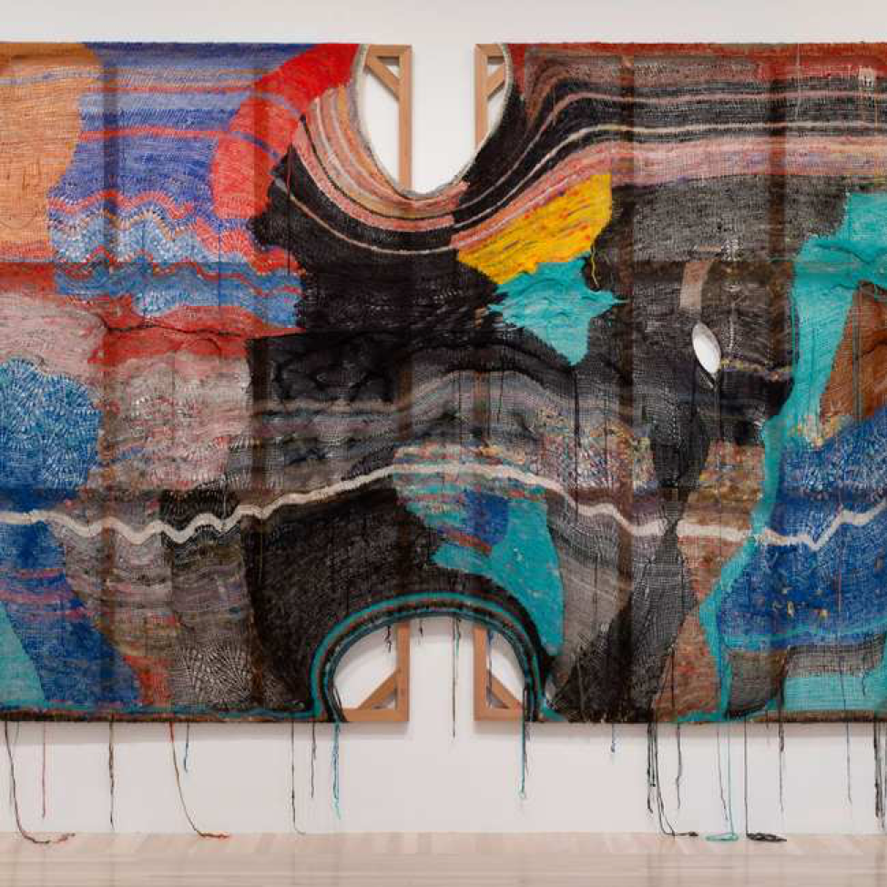
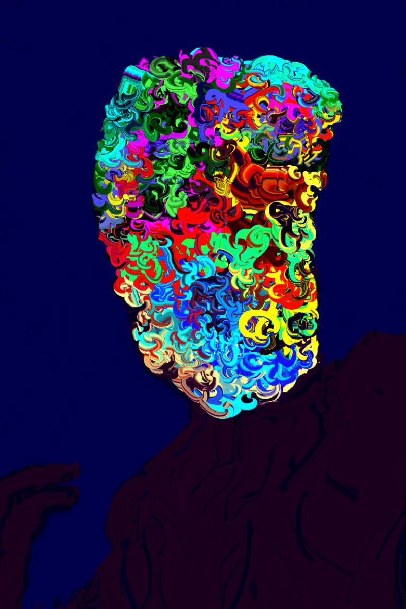
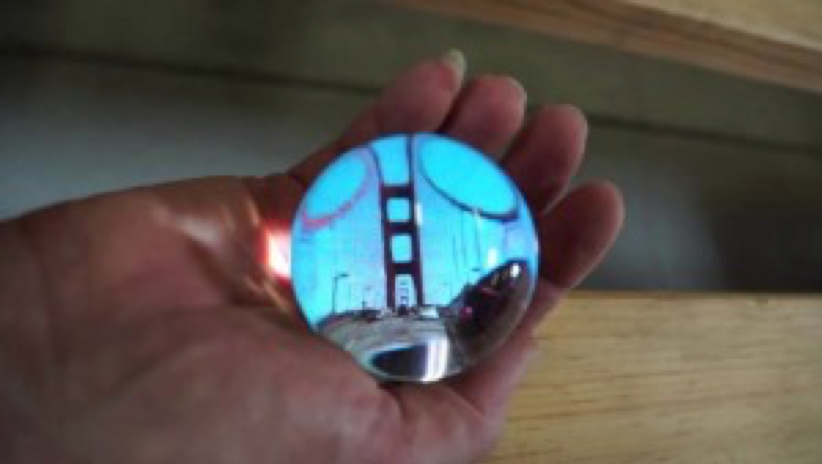

Algrorithms & Art
This blog explores work by Tom White and Channing Hansen that use algorithms to produce art in a range of mediums. It also features the pseudo code that was the basis of an original art piece.
View More

Exploring New Media Art
I analyze comment on new media art by Rachel Ku-Paris and Movers and Shakers.
View More

First Look at New Media Art
This serves as my first foray into examining new media art. I discuss "Code and Noise: The Cinema Snowglobe" by JD Beltran.
View More